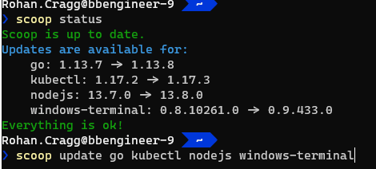
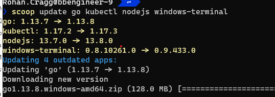

Scoop & Co
This page describes how I'm current-ly using Scoop (and other Package Managers) to configure my system
The Daddy... Scoop!¶
Get scoop.sh and check out the wiki for latest info - or see below for the TL;DR
Scoop focuses on open-source, command-line developer tools" but then those are the kinds of tools I'm using more and more... ...You're familiar with UNIX tools, and you wish there were more of them on Windows
from: https://github.com/lukesampson/scoop/wiki/Chocolatey-Comparison
Install scoop and base set of tools¶
Invoke-Expression (New-Object System.Net.WebClient).DownloadString('https://get.scoop.sh')
scoop install sudo
sudo scoop install 7zip git openssh --global
scoop install aria2 lessmsi
scoop install curl grep sed less touch
scoop install coreutils
coreutils is a multi-tool package - "a collection of GNU utilities such as bash, make, gawk and grep based on MSYS"
Tip
you can use the Unix tool ls after installing coreutils but you first need to remove the PowerShell alias already in place
i.e. add this to your Powershell $profile:
Remove-Alias -Name ls
Remove-Alias -Name cat
Remove-Alias -Name mv
Remove-Alias -Name ps
Remove-Alias -Name pwd
Remove-Alias -Name rm
Buckets¶
Then, I add additional Buckets. Buckets are collections of apps which are additional / optional to the main bucket
scoop bucket add extras
scoop bucket add versions
scoop bucket add Sysinternals
Then yet more handy tools I use (some are from the **extras* bucket*):
scoop install pwsh go docker kubectl helm make
scoop install azure-cli azure-ps storageexplorer dotnet-sdk pulumi
scoop install nodejs yarn openssl
scoop install azure-functions-core-tools
scoop install vcredist2019 linqpad notepadplusplus windows-terminal postman
scoop install paint.net krita brackets
Info
Other useful (possibly useful?) buckets that I've not yet had a use for:
- nonportable - non-portable Applications that need to retain state between versions
- full list of known buckets
Note
Those installed with the --global (and with the sudo command) will reside in the path
%ProgramData%/scoop/apps
For each version of an application the files will be in a directory with the version number, but Scoop creates a Shim for the current version in the path %UserProfile%\scoop\apps\{AppName}\current.
For example: the path to Python (python.exe) will be either:
%UserProfile%\scoop\apps\python\3.8.1\python.exe
%UserProfile%\scoop\apps\python\current\python.exe
For system tools you'll probably want to use the current shim to avoid those tools breaking between updates.
Specifying Application Versions¶
The versions bucket contains a way to obtain versions other than the latest version of an application. This is used in combination with scoop reset command to switch between versions of an app. Scoop creates a shim for each version and scoop reset switches the current shim between those versions.
For example: Switching-Ruby-And-Python-Versions
Updating Applications¶
scoop status is used to display any available updates:

...and then scoop update is used to update one or more applications (in a single command if you like!).

Other miscellany¶
Multi-Connection Downloads¶
Downloads can be speeded up by using Aria2. See also https://github.com/lukesampson/scoop#multi-connection-downloads-with-aria2
MSI extraction¶
If installed, scoop can be prevented from using it if necessary by running scoop config aria2-enabled $false
I had a problem installing Brackets and it was resolved by installing LessMSI - but at the moment I'm not sure why...
!!!info What is LessMSI? A tool to view and extract the contents of a Windows Installer (.msi) file.
scoop install lessmsi
scoop config MSIEXTRACT_USE_LESSMSI $true
Common Pre-Requisites¶
The following is a set of common pre-requisites for installing tools and utilities (e.g. the pip package manager for python tools):
Python and PIP¶
scoop install python miniconda3
scoop install curl
curl https://bootstrap.pypa.io/get-pip.py -o get-pip.py
python get-pip.py
# pip and other tools be later upgraded by re-running the above or running:
python -m pip install -U pip
# when running behind a corporate propxy, the following command should still work:
sudo pip install --upgrade --trusted-host pypi.org --trusted-host files.pythonhosted.org pip setuptools wheel
System Fonts¶
Here's another place where Scoop comes to the rescue to avoid clunky download and installs for system fonts!
Info
note how sudo is being used to install the font as a global / system font - this obvisouly pops up a UAC prompt as it requires elevated provilege to install a system font...
scoop bucket add nerd-fonts
sudo scoop install Delugia-Nerd-Font-Complete
Productivity Tools¶
MkDocs¶
MkDocs "Project documentation with Markdown"
I use this for writing this site!:
pip install mkdocs
python .\scoop\apps\python\current\Tools\scripts\win_add2path.py
Install the Custom Theme¶
Using Material theme and dependencies for CodeHilite
pip install mkdocs-material
pip install pygments # for source code syntax highlighting
PowerSession¶
This a version of asciinema for recording and re-playing PowerShell terminal sessions. Once recorded you upload the recording and share it with the world!
What is asciinema and how do I get it?!
If you've never used asciinema before and you want to share a demo of something at a terminal then you'll love this tool.
- Simply go to https://asciinema.org/
- click on Log in / Sign up
- Enter an email address
- Click on the link in the confirmation email
- Choose a username
- Stay logged into that browser on that machine and you can then
PowerSession authto create a link between the terminal and your asciinema account
Apparently tt's based on Windows Pseudo Console (ConPTY).
# Installation
scoop install PowerSession
# Usage: Log in on the machine where you want to make a recording
Powersession auth
# ... copy the URL you're given and paste it into your browser as instructed
# Record a Terminal session (it will open a new session for you)
PowerSession rec a.txt
# Play back the recording to check that it's OK to upload
PowerSession play a.txt
# If it's ok then
PowerSession upload a.txt
An example of an uploaded recording looks like this!